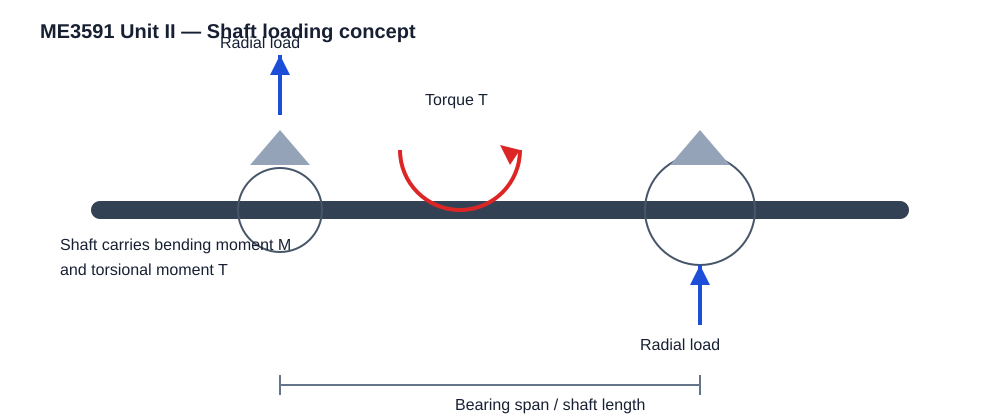
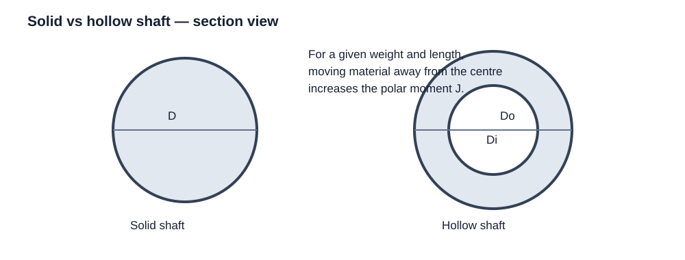
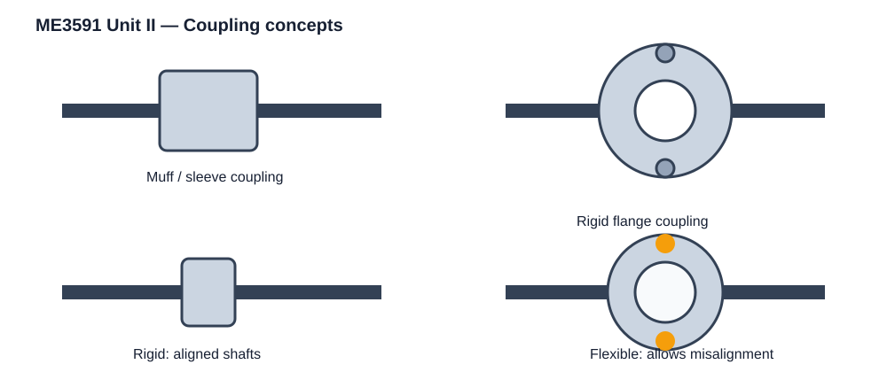

ACADRIX • Anna University R-2021 • Semester 5
Unit II covers shafts and axles; solid and hollow shafts based on strength, rigidity and critical speed; keys and splines; rigid couplings; and flexible couplings. This matches the R-2021 ME3591 syllabus. citeturn0search2
A shaft is a rotating or stationary circular member that supports elements such as gears, pulleys, flywheels and sprockets. A transmission shaft primarily transmits power and normally experiences bending and torsion. An axle is generally stationary and is mainly subjected to bending.
For shaft design, the three main checks are:
Exam idea: In a practical shaft-design problem, first identify all forces and torques, locate the critical section, calculate bending moment and torque, design the diameter from strength, then check rigidity and standard size.

When power P is given in kW and speed N is in rpm:
For N·mm:
Always keep the power unit and torque unit consistent before using a shaft equation.
For a solid circular shaft, M is bending moment and d is shaft diameter.
These two stresses act together when a shaft carries bending and torque.
For a shaft carrying both M and T, Bhandari treats the loading using equivalent moments based on the selected failure theory.
The appropriate equation is then used with the allowable/design stress and the selected shaft geometry.
Bhandari gives shaft design stresses based on material strength. A commonly used design shear stress is selected as the lower value of the material-based limits.
For combined loading, Bhandari also presents ASME-type equations using corrected bending and torsional moments. The correction factors account for service/loading effects.
In an examination problem, use the exact correction factors stated in the question. If the question gives Kb and Kt, use them directly rather than inventing values.
For a solid circular shaft:
Therefore, a larger diameter greatly increases torsional rigidity because the diameter occurs to the fourth power.
Bhandari notes typical limits such as 1° twist over a length of 20d for a line shaft, while specific applications may prescribe different limits.
Lateral rigidity concerns transverse deflection. The shaft is treated as a beam supported by bearings with the actual applied loads. Calculate the deflection at the critical location and compare it with the permitted value.
Critical speed, also called whirling speed, is the speed at which the rotating shaft approaches a resonance condition because of lateral vibration. It is especially important when the shaft carries gears, pulleys or other rotating masses.
Design rule: The operating speed should be kept safely away from the critical speed. For a numerical critical-speed problem, use the method and constants specified in the prescribed text/data supplied for the examination.

| Property | Solid shaft | Hollow shaft |
|---|---|---|
| Area | πD²/4 | π(Do² − Di²)/4 |
| Polar moment J | πD⁴/32 | π(Do⁴ − Di⁴)/32 |
| Mass for same length | Depends on area | Can be reduced for suitable wall thickness |
| Typical advantage | Simple manufacture | Good strength/rigidity-to-weight potential |
For a hollow shaft, define K = Di/Do. Then:
For equal weight and length, Bhandari shows why material placed farther from the axis can give a hollow shaft higher torsional strength and rigidity than a solid shaft of the same weight.
For a belt drive, the shaft receives the pull of the tight-side and slack-side tensions. The resultant pull is related to T1 + T2, while the transmitted torque is related to (T1 − T2)D/2.
For a spur gear, the tangential force produces torque and the radial force produces an additional bending load. For the usual pressure angle ψ:
Resultant gear force:
A key connects a hub to a shaft and transmits torque. Bhandari classifies keys broadly as sunk keys and saddle keys. Sunk keys include ordinary, feather, Woodruff and related forms.
A key is checked mainly against:
Here b is key width, h is key height, l is effective key length and d is shaft diameter.
Design sequence: calculate torque → select standard key width and height from the permitted data → calculate length from shear → calculate length from crushing → choose the larger length → select the next practical standard length.
Splines are multiple integral keys formed on a shaft and mating with corresponding grooves in a hub. Compared with a single key, splines provide a larger working surface and better torque distribution. They also help centring and guiding the hub.
Common forms discussed by Bhandari include parallel-sided splines and involute splines.
Parallel splines are designated using the number of splines and the minor/major diameters. Involute splines have gear-like tooth profiles and are useful where higher strength and easier manufacture are required.

A coupling joins two rotating shafts. Its purposes include transmitting torque, allowing disconnection for maintenance, accommodating permitted misalignment where required, reducing shock transmission and providing overload protection.
Rigid couplings are intended for shafts that are properly aligned.
Flexible couplings permit specified lateral/angular misalignment and help absorb shock.
Bhandari gives usual proportions for a sleeve/muff coupling:
The sleeve is checked as a hollow shaft. The key is checked for shear and crushing.
Use the standard key dimensions from the prescribed design data book rather than choosing arbitrary dimensions.
For a flange coupling, the shaft, key, bolts, hub and flange must all be checked. Typical failure checks include shaft/key shear and crushing, bolt shear/crushing, flange shear and hub shear.
For a bushed-pin flexible coupling, additional checks include rubber-bush bearing pressure and pin bending/shear, along with the shaft, key and flange checks.
The R-2021 syllabus identifies Unit II as Design of Shafts and Couplings and lists shafts/axles, solid and hollow shafts, strength, rigidity, critical speed, keys, splines, rigid couplings and flexible couplings. citeturn0search2 The prescribed textbook list names Bhandari, 4th Edition (2016), and Shigley et al., 10th Edition (2015). fileciteturn139file4L242-L280 The technical content on this page was checked against the available Bhandari text, especially its shaft chapter and coupling chapter. fileciteturn143file5L390-L412 fileciteturn145file7L531-L580
Next study step: practise the Unit II solved problems. The ACADRIX solved-problem format uses every required calculation step, boxes only important formulas, keeps final answers unboxed, and shows unit/strength checks.